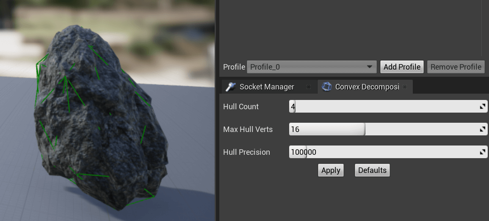

资源
环境配置
还是把版本换成 UE4.27 吧，让它支持 VS2022。
课程
202-Unreal 项目文件结构解读
一些子目录是在引擎和游戏项目目录之间通用的：
Binaries - 包含可执行文件或编译期间创建的其他文件。
Build - 包含构建引擎或游戏所需的文件，包括创建特定于平台的构建版所需的文件。
Config - 配置文件，用于设置用来控制引擎行为的值。项目 Config 文件中设置的值会覆盖 Engine\Config 目录中设置的值。
Content - 保存引擎或游戏的内容，包括资源包和贴图。
DerivedDataCache - 包含加载时针对引用内容生成的派生数据文件。引用内容没有相应的缓存文件会导致加载时间显著延长。
Intermediate - 包含构建引擎或游戏时生成的临时文件。在游戏目录中，着色器存储在 Intermediate 目录中。
Saved - 包含自动保存、配置（.ini）文件和日志文件。此外，Engine\Saved 目录还包含崩溃日志、硬件信息和 Swarm 选项与数据。
Source - 包含引擎或游戏的所有源文件，包括引擎源代码、工具和游戏类等。
迁移项目最小的单元是 Config、Content 和 XXX.uproject。
203-Unreal 缓存数据解读
Epic 中修改保管库的缓存位置。
这个路径存放着着色器的缓存。
209-C++ 与蓝图的关系与选择
C++ 与蓝图
两者关系
蓝图建立在 C++ 代码之上
蓝图与 C++ 可以很好地协作
理论平衡
C++ 由游戏逻辑程序员使用
完成虚幻尚未封装的功能
完成根据项目需求需要自定义的功能
蓝图由游戏设计人员使用
设计其他游戏资源
功能测试时使用
项目快速迭代时使用
调用编写好的 C++ 代码
什么是蓝图可视化脚本
蓝图可视化脚本简称“蓝图”、“蓝图脚本”
蓝图是一种可视化编程
实际上，你使用蓝图的时候就是在编程
蓝图是一种需要编译的面向对象的可视化编程语言
蓝图完全集成在虚幻 4 中
通过节点与连线工作
什么是蓝图系统
蓝图系统俗称“蓝图”、“蓝图类”
将蓝图类想象成游戏内容的容器
其可以包含组件
其可以包含脚本
其可以仅仅包含数据
301-C++ 基础回顾与虚幻 C++ 类的继承结构
虚幻引擎 C++ 类层级结构 (Hierarchy)
Object
Actor
能放置在场景 (Level) 中
可以有视觉表现/可以被看到
Pawn
可以被控制器 (Controller) 持有 (Possess)
Character
有角色移动组件 (CharacterMovementComponent)
具有适合角色的封装好的一系列功能
一个 Object 不是 (Is NOT a) Actor
一个 Object 不是一个 (Is NOT a) Pawn
一个 Actor 是一个 (ls a) Object
一个 Actor 不是一个 (Is NOT a) Pawn
一个 Pawn 是 (ls a) Actor
一个 Pawn 是 (ls a) Object
Package、World、Level 和 Actor 之间的关系。
302-使用宏参与虚幻的反射与垃圾回收系统
UE4 的反射系统允许在运行时获取类的信息、动态创建对象、调用函数等操作，而无需提前知道类的具体类型。通过反射系统，可以实现诸如蓝图编辑、插件系统、序列化和反序列化等功能。在 UE4 中，反射系统主要基于宏（macros）和元数据（metadata）来实现，开发者可以利用它来实现更灵活的代码设计和功能扩展。（在蓝图脚本中调用 C++ 的内容）
UE4 的垃圾回收系统负责管理动态分配的内存，在运行时自动释放不再需要的内存空间，防止内存泄漏和提高性能。UE4 使用基于引用计数（reference counting）和标记-清除（mark and sweep）算法的混合方式来进行垃圾回收，确保及时释放不再使用的对象，并最大程度地减少性能损耗。
在定义类、变量、函数前分别加上 UCLASS()、UPROPERTY() 和 UFUNCTION() 这样的宏，就可以参与反射与垃圾回收系统，
引用头文件时，#include "MyActor.generated.h" 务必放在所有引用的头文件的下方。
303-创建自己的第一个 UObject 子类
新建一个 C++ 项目。
项目中确保打开了 Show C++ Classes。
所有 C++ 类都会被存放到 C++ Classes/项目名称 中。
在这个目录下创建一个 C++ class，打开 Show All Classes，创建一个 Object 类。
名字取为 MyObject，则会生成 MyObject.cpp 和 MyObject.h 两个文件。
.cpp 文件是写逻辑用的，.h 文件是写声明用的。
修改 MyObject.h 文件，然后保存：
1 2 3 4 5 6 7 8 9 10 11 12 13 14 15 16 #pragma once #include "CoreMinimal.h" #include "UObject/NoExportTypes.h" #include "MyObject.generated.h" UCLASS (Blueprintable)class MYPROJECT8_API UMyObject : public UObjectGENERATED_BODY ()
通过在类声明前添加 UCLASS(Blueprintable) 宏，可以让该类在 UE4 的蓝图编辑器中可见，允许开发者使用蓝图来创建该类的实例、设置属性和调用函数（在蓝图脚本中调用 C++ 的内容）。
可以用 VS 的生成进行编译（有可能 UE4 没反应过来，但可以方便地显示中文的报错信息）。
也可以用 UE4 的 Compile 按钮编译。
此时所创建的类就可以 Create Blueprint class based on MyObject。
304-加快 Unreal 编译速度
UE4.22 中，每次编译都会重新生成反射代码，影响编译速度（不知道 4.27 还有没有……）。
课程中提到的解决方案是，安装路径下找到 Win64/UnrealHeaderTool.target，往其中的第二行加一个空格……真玄学。
305-创建 UObject 的蓝图类与基础宏参数介绍
对于之前所创建的 MyObject 类，选择 Create Blueprint class based on MyObject 以创建一个反射的蓝图，命名为 BP_MyObject。
编写 MyObject.h 的代码，给 MyObject 定义一个构造函数、float 类型变量 MyFloat，函数 MyFunction()，添加宏 UPROPERTY(BlueprintReadWrite) 使得变量和函数能在蓝图类中读写：
1 2 3 4 5 6 7 8 9 10 11 12 13 14 15 16 17 18 19 20 21 22 23 24 25 26 #pragma once #include "CoreMinimal.h" #include "UObject/NoExportTypes.h" #include "MyObject.generated.h" UCLASS (Blueprintable)class MYPROJECT8_API UMyObject : public UObjectGENERATED_BODY ()public :UMyObject ();UPROPERTY (BlueprintReadWrite)float MyFloat;UFUNCTION (BlueprintCallable)void MyFunction ()
在 MyObject.cpp 里写实现（暂为空）：
1 2 3 4 5 6 7 8 9 10 11 #include "MyObject.h" UMyObject ()void UMyObject::MyFunction ()
保存并编译。
此时在对应的蓝图中就可以创建相关的节点。
试一试！
306-使用 UE_LOG 打印日志与在蓝图中实例化继承于 Object 的类
修改 MyObject.h，宏中可以定义变量/函数属于哪个 Category：
1 2 3 4 5 6 7 8 9 10 11 12 13 14 15 16 17 18 19 20 21 22 23 24 #pragma once #include "CoreMinimal.h" #include "UObject/NoExportTypes.h" #include "MyObject.generated.h" UCLASS (Blueprintable)class MYPROJECT8_API UMyObject : public UObjectGENERATED_BODY ()public :UMyObject ();UPROPERTY (BlueprintReadWrite, Category = "My Variables" )float MyFloat;UFUNCTION (BlueprintCallable, Category = "My Functions" )void MyFunction ()
MyObject.cpp 中写 MyFunction() 的实现，UE_LOG() 可以向控制台输出信息：
1 2 3 4 5 6 7 8 9 10 11 12 13 #include "MyObject.h" UMyObject ()0.0f ;void UMyObject::MyFunction () UE_LOG (LogTemp, Log, TEXT ("Hello World!" ));UE_LOG (LogTemp, Warning, TEXT ("Hello World!" ));UE_LOG (LogTemp, Error, TEXT ("Hello World!" ));
在关卡蓝图中，Construct Object from Class 可以将某个类实例化。
这么画关卡蓝图，实例化 BP_MyObject 类，调用其中的 MyFunction()。
开跑！此时就会在 OutputLog 里输出相应信息。
307-如何删除自定义的 C++ 类
401-创建自己的 Actor 子类与学习类的命名规范
创建一个 Actor 的 C++ class。
路径保持默认（源教程在 Path 里添油加醋了个 /Actor 结果我这里编译出错，好像不太聪明的样子……算了我还是妥协好了，后来又想了想可能要改一下 #include "MyActor.h" 的位置），之后创建好了 MyActor.h 和 MyActor.cpp。
看一下 MyActor.cpp，感觉很像 Unity 里的 Start() 和 Update()：
1 2 3 4 5 6 7 8 9 10 11 12 13 14 15 16 17 18 19 20 #include "MyActor.h" AMyActor ()true ;void AMyActor::BeginPlay () BeginPlay ();void AMyActor::Tick (float DeltaTime) Tick (DeltaTime);
派生自 Actor 的类带有 A 前缀，如 AController。
派生自 Object 的类带有 U 前缀，如 UComponent。
Enums 的前缀是 E，如 EFortificationType。Interface 的前缀通常是 I，如 lAbilitySystemInterface。Template 的前缀是 T，如 TArray。派生自 SWidget 的类 (Slate Ul) 带有前缀 S，如 SButton。
其他类的前缀为字母 F，如 FVector。
看一看 MyActor.h 里的内容，虽然 UCLASS() 没有 Blueprintable，但是也可以执行 Create Blueprint class based on MyObject，这是因为所继承的类 AActor 自带 Blueprintable：
1 2 3 4 5 6 7 8 9 10 11 12 13 14 15 16 17 18 19 20 21 22 23 #pragma once #include "CoreMinimal.h" #include "GameFramework/Actor.h" #include "MyActor.generated.h" UCLASS ()class MYPROJECT8_API AMyActor : public AActorGENERATED_BODY ()public : AMyActor ();protected :virtual void BeginPlay () override public : virtual void Tick (float DeltaTime) override
402-组件简介与使用蓝图类扩展代码的优点
略。这个蓝图跟 Unity 里的 prefab 蛮像的。
403-在 C++ 中创建静态网格组件
编辑 MyActor.h 里的内容，声明一个变量 UStaticMeshComponent* MyStaticMesh：
1 2 3 4 5 6 7 8 9 10 11 12 13 14 15 16 17 18 19 20 21 22 23 24 25 26 27 #pragma once #include "CoreMinimal.h" #include "GameFramework/Actor.h" #include "MyActor.generated.h" UCLASS ()class MYPROJECT8_API AMyActor : public AActorGENERATED_BODY ()public : AMyActor ();UPROPERTY (VisibleAnywhere, Category = "My Actor Components" )protected :virtual void BeginPlay () override public : virtual void Tick (float DeltaTime) override
编辑 MyActor.cpp 里的内容，在构造函数里设置 MyStaticMesh 里的值：
1 2 3 4 5 6 7 8 9 10 11 12 13 14 15 16 17 18 19 20 21 22 #include "MyActor.h" AMyActor ()true ;CreateDefaultSubobject <UStaticMeshComponent>(TEXT ("MyStaticMesh" ));void AMyActor::BeginPlay () BeginPlay ();void AMyActor::Tick (float DeltaTime) Tick (DeltaTime);
如此做，对应的蓝图里就会显示构造函数创建的 MyStaticMesh。
也可以不用蓝图直接将定义的 C++ class 拖到关卡中。
404-导入模型与布置场景
略。
405-使用 SetActorLoction 控制位置与宏参数 EditInstanceOnly 介绍
修改 MyActor.h 的内容，添加一个 FVector 类型的变量 InitLocation，上面添加修饰宏 UPROPERTY(EditInstanceOnly, Category = "My Actor Properties | Vector")，让这个值可以在实例中编辑：
1 2 3 4 5 6 7 8 9 10 11 12 13 14 15 16 17 18 19 20 21 22 23 24 25 26 27 28 29 #pragma once #include "CoreMinimal.h" #include "GameFramework/Actor.h" #include "MyActor.generated.h" UCLASS ()class MYPROJECT8_API AMyActor : public AActorGENERATED_BODY ()public : AMyActor ();UPROPERTY (VisibleAnywhere, Category = "My Actor Components" )UPROPERTY (EditInstanceOnly, Category = "My Actor Properties | Vector" )protected :virtual void BeginPlay () override public : virtual void Tick (float DeltaTime) override
修改 MyActor.cpp 里的内容，在 BeginPlay() 中将 Actor 的坐标设为 InitLocation 的值。
1 2 3 4 5 6 7 8 9 10 11 12 13 14 15 16 17 18 19 20 21 22 23 24 25 #include "MyActor.h" AMyActor ()true ;CreateDefaultSubobject <UStaticMeshComponent>(TEXT ("MyStaticMesh" ));FVector (0.0f );void AMyActor::BeginPlay () BeginPlay ();SetActorLocation (InitLocation);void AMyActor::Tick (float DeltaTime) Tick (DeltaTime);
在蓝图实例中多了个设置 InitLocation 的地方，运行关卡会发现蓝图实例被正确地移动到了 InitLocation 的位置。
406-VisibleInstanceOnly 与 EditDefaultsOnly
修改 MyActor.h 里的内容，引入了两个新的宏参数：
VisibleInstanceOnly 只在实例中可见，不可编辑。EditDefaultsOnly 只可在模板中编辑。
将 bool 变量命名前加上前缀 b，UE 会自动识别并把前缀去除。
1 2 3 4 5 6 7 8 9 10 11 12 13 14 15 16 17 18 19 20 21 22 23 24 25 26 27 28 29 30 31 32 33 34 35 #pragma once #include "CoreMinimal.h" #include "GameFramework/Actor.h" #include "MyActor.generated.h" UCLASS ()class MYPROJECT8_API AMyActor : public AActorGENERATED_BODY ()public : AMyActor ();UPROPERTY (VisibleAnywhere, Category = "My Actor Components" )UPROPERTY (EditInstanceOnly, Category = "My Actor Properties | Vector" )UPROPERTY (VisibleInstanceOnly, Category = "My Actor Properties | Vector" )UPROPERTY (EditDefaultsOnly, Category = "My Actor Properties | Vector" )bool bGotoInitLocation;protected :virtual void BeginPlay () override public : virtual void Tick (float DeltaTime) override
修改 MyActor.cpp 里的内容：
1 2 3 4 5 6 7 8 9 10 11 12 13 14 15 16 17 18 19 20 21 22 23 24 25 26 27 28 29 #include "MyActor.h" AMyActor ()true ;CreateDefaultSubobject <UStaticMeshComponent>(TEXT ("MyStaticMesh" ));FVector (0.0f );FVector (0.0f );false ;void AMyActor::BeginPlay () BeginPlay ();GetActorLocation ();if (bGotoInitLocation)SetActorLocation (InitLocation);void AMyActor::Tick (float DeltaTime) Tick (DeltaTime);
开跑！可以看到宏变量 VisibleAnywhere、EditInstanceOnly、VisibleInstanceOnly 和 EditDefaultsOnly 之间的区别。
407-VisibleDefaultsOnly 与 EditAnywhere
修改 MyActor.h 的内容，引入了两个新的宏参数：
VisibleDefaultsOnly 只在模板中可见（没有地方可以编辑，一般没什么卵用）。EditAnywhere 在模板类和实例类中均可编辑。
1 2 3 4 5 6 7 8 9 10 11 12 13 14 15 16 17 18 19 20 21 22 23 24 25 26 27 28 29 30 31 32 33 34 35 36 37 38 39 40 41 42 43 44 #pragma once #include "CoreMinimal.h" #include "GameFramework/Actor.h" #include "MyActor.generated.h" UCLASS ()class MYPROJECT8_API AMyActor : public AActorGENERATED_BODY ()public : AMyActor ();UPROPERTY (VisibleAnywhere, Category = "My Actor Components" )UPROPERTY (EditInstanceOnly, Category = "My Actor Properties | Vector" )UPROPERTY (VisibleInstanceOnly, Category = "My Actor Properties | Vector" )UPROPERTY (EditDefaultsOnly, Category = "My Actor Properties | Vector" )bool bGotoInitLocation;UPROPERTY (VisibleDefaultsOnly, Category = "My Actor Properties | Vector" )UPROPERTY (EditAnywhere, Category = "My Actor Properties | Vector" )UPROPERTY (EditAnywhere, Category = "My Actor Properties | Vector" )bool bShouldMove;protected :virtual void BeginPlay () override public : virtual void Tick (float DeltaTime) override
修改 MyActor.cpp 里的内容：
1 2 3 4 5 6 7 8 9 10 11 12 13 14 15 16 17 18 19 20 21 22 23 24 25 26 27 28 29 30 31 32 33 34 35 36 37 #include "MyActor.h" AMyActor ()true ;CreateDefaultSubobject <UStaticMeshComponent>(TEXT ("MyStaticMesh" ));FVector (0.0f );FVector (0.0f );false ;FVector (0.0f );FVector (0.0f );false ;void AMyActor::BeginPlay () BeginPlay ();GetActorLocation ();if (bGotoInitLocation)SetActorLocation (InitLocation);void AMyActor::Tick (float DeltaTime) Tick (DeltaTime);if (bShouldMove)AddActorLocalOffset (TickLoactionOffset);
开跑！此时实例会每帧沿方向 (0.1, 0.1, 0.1) 移动。
408-在编辑器中限制输入值的范围与不要将组件指针设为 EditAnywhere
不要将组件指针设为 EditAnywhere
1 2 UPROPERTY (EditAnywhere, Category = "My Actor Components" )
不要这么做！生成的界面会十分复杂，不友好！
修改 MyActor.h 中 TickLoactionOffset 的宏，如此做将在面板中限制变量的取值范围：
1 2 UPROPERTY (EditAnywhere, Category = "My Actor Properties | Vector" , meta = (ClampMin = -5.0f , ClampMax = 5.0f , UIMin = -5.0f , UIMax = 5.0f ))
409-简单碰撞与复杂碰撞
教你认识 UE 里的碰撞，分为 简单碰撞 和 复杂碰撞。
410-模拟物理与重力
物体中若打开了 Physics 下的 Simulate Physics，则会开启物理。

给这个物体加一个简单的凸包碰撞。
开跑！按下 `` 键可以打开命令行，输出show Collision` 即可在视图中显示碰撞的具体位置。
411-通过代码增加力与力矩
修改 MyActor.h 里的内容，添加了变量力 FVector InitForce、力矩 FVector InitTorque 和 纯改变加速度（施加力的时候忽略质量）bAccelChange：
1 2 3 4 5 6 7 8 9 10 11 12 13 14 15 16 17 18 19 20 21 22 23 24 25 26 27 28 29 30 31 32 33 34 35 36 37 38 39 40 41 42 43 44 45 46 47 48 49 50 51 52 53 #pragma once #include "CoreMinimal.h" #include "GameFramework/Actor.h" #include "MyActor.generated.h" UCLASS ()class MYPROJECT8_API AMyActor : public AActorGENERATED_BODY ()public : AMyActor ();UPROPERTY (VisibleAnywhere, Category = "My Actor Components" )UPROPERTY (EditInstanceOnly, Category = "My Actor Properties | Vector" )UPROPERTY (VisibleInstanceOnly, Category = "My Actor Properties | Vector" )UPROPERTY (EditDefaultsOnly, Category = "My Actor Properties | Vector" )bool bGotoInitLocation;UPROPERTY (VisibleDefaultsOnly, Category = "My Actor Properties | Vector" )UPROPERTY (EditAnywhere, Category = "My Actor Properties | Vector" , meta = (ClampMin = -5.0f , ClampMax = 5.0f , UIMin = -5.0f , UIMax = 5.0f ))UPROPERTY (EditAnywhere, Category = "My Actor Properties | Vector" )bool bShouldMove;UPROPERTY (EditInstanceOnly, Category = "My Actor Properties | Physics" )UPROPERTY (EditInstanceOnly, Category = "My Actor Properties | Physics" )UPROPERTY (EditInstanceOnly, Category = "My Actor Properties | Physics" )bool bAccelChange;protected :virtual void BeginPlay () override public : virtual void Tick (float DeltaTime) override
修改 MyActor.cpp 里的内容：
1 2 3 4 5 6 7 8 9 10 11 12 13 14 15 16 17 18 19 20 21 22 23 24 25 26 27 28 29 30 31 32 33 34 35 36 37 38 39 40 41 42 43 #include "MyActor.h" #include "Components/StaticMeshComponent.h" AMyActor ()true ;CreateDefaultSubobject <UStaticMeshComponent>(TEXT ("MyStaticMesh" ));FVector (0.0f );FVector (0.0f );false ;FVector (0.0f );FVector (0.0f );false ;FVector (0.0f );FVector (0.0f );false ;void AMyActor::BeginPlay () BeginPlay ();GetActorLocation ();if (bGotoInitLocation)SetActorLocation (InitLocation);AddForce (InitForce, "NAME_None" , bAccelChange);AddTorque (InitForce, "NAME_None" , bAccelChange);void AMyActor::Tick (float DeltaTime) Tick (DeltaTime);if (bShouldMove)AddActorLocalOffset (TickLoactionOffset);
MyStaticMesh-> 默认不可用，需从官方文档查找 UStaticMeshComponent 的属性：UStaticMeshComponent | Unreal Engine 5.2 Documentation 得到需引入 #include "Components/StaticMeshComponent.h"。
此时在实例类中便可设置给对象初始化的力和力矩。
412-使用 Sweep 在不开启模拟物理的情况下进行碰撞
在没有 Simulate Physics 的情况下，默认的碰撞是不会有效的，但是可以打开 Sweep 在不开启模拟物理的情况下进行碰撞。
修改 MyActor.cpp，AddActorLocalOffset(TickLoactionOffset, true); 便可在不使用物理的情况下进行碰撞：
1 2 3 4 5 6 7 8 9 10 11 12 13 14 15 16 17 18 19 20 21 22 23 24 25 26 27 28 29 30 31 32 33 34 35 36 37 38 39 40 41 42 43 #include "MyActor.h" #include "Components/StaticMeshComponent.h" AMyActor ()true ;CreateDefaultSubobject <UStaticMeshComponent>(TEXT ("MyStaticMesh" ));FVector (0.0f );FVector (0.0f );false ;FVector (0.0f );FVector (0.0f );false ;FVector (0.0f );FVector (0.0f );false ;void AMyActor::BeginPlay () BeginPlay ();GetActorLocation ();if (bGotoInitLocation)SetActorLocation (InitLocation);void AMyActor::Tick (float DeltaTime) Tick (DeltaTime);if (bShouldMove)AddActorLocalOffset (TickLoactionOffset, true );
413-碰撞通道与击中信息
Collision 可以设置哪些碰撞有效，必须两个碰撞均是 Block 才可以阻挡。
修改 MyActor.cpp 里的内容，FHitResult HitResult 和 AddActorLocalOffset(TickLoactionOffset, true, &HitResult); 可以获取碰撞信息：
1 2 3 4 5 6 7 8 9 10 11 12 13 14 15 16 17 18 19 20 21 22 23 24 25 26 27 28 29 30 31 32 33 34 35 36 37 38 39 40 41 42 43 44 45 46 #include "MyActor.h" #include "Components/StaticMeshComponent.h" AMyActor ()true ;CreateDefaultSubobject <UStaticMeshComponent>(TEXT ("MyStaticMesh" ));FVector (0.0f );FVector (0.0f );false ;FVector (0.0f );FVector (0.0f );false ;FVector (0.0f );FVector (0.0f );false ;void AMyActor::BeginPlay () BeginPlay ();GetActorLocation ();if (bGotoInitLocation)SetActorLocation (InitLocation);void AMyActor::Tick (float DeltaTime) Tick (DeltaTime);if (bShouldMove)AddActorLocalOffset (TickLoactionOffset, true , &HitResult);UE_LOG (LogTemp, Warning, TEXT ("X: %f, Y: %f, Z: %f" ), HitResult.Location.X, HitResult.Location.Y, HitResult.Location.Z);
开跑！Output Log 将输出碰撞信息。
414-其他常用函数与可探索部分
略。
501-创建自己的 Pawn 类、自己的根组件并将静态网格组件附加到其上
创建一个 Pawn 类型的 C++ Class，获得 MyPawn.h 和 MyPawn.cpp。
编辑 MyPawn.h，定义变量 class UStaticMeshComponent* MyStaticMesh;，这个 class 可加可不加：
1 2 3 4 5 6 7 8 9 10 11 12 13 14 15 16 17 18 19 20 21 22 23 24 25 26 #include "CoreMinimal.h" #include "GameFramework/Pawn.h" #include "MyPawn.generated.h" UCLASS ()class MYPROJECT8_API AMyPawn : public APawnGENERATED_BODY ()public :AMyPawn ();UPROPERTY (VisibleAnywhere, Category = "My Pawn Components" )class UStaticMeshComponent * MyStaticMesh;protected :virtual void BeginPlay () override public : virtual void Tick (float DeltaTime) override virtual void SetupPlayerInputComponent (class UInputComponent* PlayerInputComponent) override
编辑 MyPawn.cpp，设置 RootComponent 的值（模板自带），设置 MyStaticMesh 的值并将其设为 RootComponent 的子节点：
1 2 3 4 5 6 7 8 9 10 11 12 13 14 15 16 17 18 19 20 21 22 23 24 25 26 27 28 29 30 31 #include "MyPawn.h" #include "Components/StaticMeshComponent.h" AMyPawn ()true ;CreateDefaultSubobject <USceneComponent>(TEXT ("RootComponent" ));CreateDefaultSubobject <UStaticMeshComponent>(TEXT ("MyStaticMesh" ));SetupAttachment (GetRootComponent ());void AMyPawn::BeginPlay () BeginPlay ();void AMyPawn::Tick (float DeltaTime) Tick (DeltaTime);void AMyPawn::SetupPlayerInputComponent (UInputComponent* PlayerInputComponent) SetupPlayerInputComponent (PlayerInputComponent);
编译。Create Blueprint class based on MyPawn。
开跑！
502-为自己的 Pawn 设置相机组件
修改 MyPawn.h，定义一个新的变量 class UCameraComponent* MyCamera;：
1 2 3 4 5 6 7 8 9 10 11 12 13 14 15 16 17 18 19 20 21 22 23 24 25 26 27 28 29 30 31 32 33 #pragma once #include "CoreMinimal.h" #include "GameFramework/Pawn.h" #include "MyPawn.generated.h" UCLASS ()class MYPROJECT8_API AMyPawn : public APawnGENERATED_BODY ()public :AMyPawn ();UPROPERTY (VisibleAnywhere, Category = "My Pawn Components" )class UStaticMeshComponent * MyStaticMesh;UPROPERTY (VisibleAnywhere, Category = "My Pawn Components" )class UCameraComponent * MyCamera;protected :virtual void BeginPlay () override public : virtual void Tick (float DeltaTime) override virtual void SetupPlayerInputComponent (class UInputComponent* PlayerInputComponent) override
修改 MyPawn.cpp，设置好 MyCamera 的属性：
1 2 3 4 5 6 7 8 9 10 11 12 13 14 15 16 17 18 19 20 21 22 23 24 25 26 27 28 29 30 31 32 33 34 35 36 37 38 39 40 41 #include "MyPawn.h" #include "Components/StaticMeshComponent.h" #include "Camera/CameraComponent.h" AMyPawn ()true ;CreateDefaultSubobject <USceneComponent>(TEXT ("RootComponent" ));CreateDefaultSubobject <UStaticMeshComponent>(TEXT ("MyStaticMesh" ));SetupAttachment (GetRootComponent ());CreateDefaultSubobject <UCameraComponent>(TEXT ("MyCamera" ));SetupAttachment (GetRootComponent ());SetRelativeLocation (FVector (-300.0f , 0.0f , 300.0f ));SetRelativeRotation (FRotator (-45.0f , 0.0f , 0.0f ));void AMyPawn::BeginPlay () BeginPlay ();void AMyPawn::Tick (float DeltaTime) Tick (DeltaTime);void AMyPawn::SetupPlayerInputComponent (UInputComponent* PlayerInputComponent) SetupPlayerInputComponent (PlayerInputComponent);
开跑！
503-设置 GameMode 并自动持有 Pawn
对于 C++ Classes 下的 GameModeBase，创建游戏模式蓝图 Create Blueprint class based on ...。
在创建的蓝图中的 Class Defaults，将 Default Pawn Class 设置为 BP_MyPawn。
关卡中的 World Settings，设置好 GameMode Override。
BP_MyPawn 中设置好 Auto Possess Player 为 Player 0，或者直接修改 MyPawn.cpp，添加语句 AutoPossessPlayer = EAutoReceiveInput::Player0;：
1 2 3 4 5 6 7 8 9 10 11 12 13 14 15 16 17 18 19 20 21 22 23 24 25 26 27 28 29 30 31 32 33 34 35 36 37 38 39 40 41 42 43 #include "MyPawn.h" #include "Components/StaticMeshComponent.h" #include "Camera/CameraComponent.h" AMyPawn ()true ;CreateDefaultSubobject <USceneComponent>(TEXT ("RootComponent" ));CreateDefaultSubobject <UStaticMeshComponent>(TEXT ("MyStaticMesh" ));SetupAttachment (GetRootComponent ());CreateDefaultSubobject <UCameraComponent>(TEXT ("MyCamera" ));SetupAttachment (GetRootComponent ());SetRelativeLocation (FVector (-300.0f , 0.0f , 300.0f ));SetRelativeRotation (FRotator (-45.0f , 0.0f , 0.0f ));void AMyPawn::BeginPlay () BeginPlay ();void AMyPawn::Tick (float DeltaTime) Tick (DeltaTime);void AMyPawn::SetupPlayerInputComponent (UInputComponent* PlayerInputComponent) SetupPlayerInputComponent (PlayerInputComponent);
504-按键映射与轴事件绑定
在 Project Settings 力设置按键映射。
在 MyPawn.h 里定义私有的移动函数：
1 2 3 4 5 6 7 8 9 10 11 12 13 14 15 16 17 18 19 20 21 22 23 24 25 26 27 28 29 30 31 32 33 34 35 36 #pragma once #include "CoreMinimal.h" #include "GameFramework/Pawn.h" #include "MyPawn.generated.h" UCLASS ()class MYPROJECT8_API AMyPawn : public APawnGENERATED_BODY ()public :AMyPawn ();UPROPERTY (VisibleAnywhere, Category = "My Pawn Components" )class UStaticMeshComponent * MyStaticMesh;UPROPERTY (VisibleAnywhere, Category = "My Pawn Components" )class UCameraComponent * MyCamera;protected :virtual void BeginPlay () override public : virtual void Tick (float DeltaTime) override virtual void SetupPlayerInputComponent (class UInputComponent* PlayerInputComponent) override private :void MoveForward (float Value) void MoveRight (float Value)
MyPawn.cpp 里将按键映射与轴事件绑定：
1 2 3 4 5 6 7 8 9 10 11 12 13 14 15 16 17 18 19 20 21 22 23 24 25 26 27 28 29 30 31 32 33 34 35 36 37 38 39 40 41 42 43 44 45 46 47 48 49 50 51 52 53 54 #include "MyPawn.h" #include "Components/StaticMeshComponent.h" #include "Camera/CameraComponent.h" #include "Components/InputComponent.h" AMyPawn ()true ;CreateDefaultSubobject <USceneComponent>(TEXT ("RootComponent" ));CreateDefaultSubobject <UStaticMeshComponent>(TEXT ("MyStaticMesh" ));SetupAttachment (GetRootComponent ());CreateDefaultSubobject <UCameraComponent>(TEXT ("MyCamera" ));SetupAttachment (GetRootComponent ());SetRelativeLocation (FVector (-300.0f , 0.0f , 300.0f ));SetRelativeRotation (FRotator (-45.0f , 0.0f , 0.0f ));void AMyPawn::BeginPlay () BeginPlay ();void AMyPawn::Tick (float DeltaTime) Tick (DeltaTime);void AMyPawn::SetupPlayerInputComponent (UInputComponent* PlayerInputComponent) SetupPlayerInputComponent (PlayerInputComponent);BindAxis (TEXT ("MoveForward" ), this , &AMyPawn::MoveForward);BindAxis (TEXT ("MoveRight" ), this , &AMyPawn::MoveRight);void AMyPawn::MoveForward (float Value) void AMyPawn::MoveRight (float Value)
505-使用 Tick 的移动
修改 MyActor.h 里的内容，定义变量 MaxSpeed 和 Velocity：
1 2 3 4 5 6 7 8 9 10 11 12 13 14 15 16 17 18 19 20 21 22 23 24 25 26 27 28 29 30 31 32 33 34 35 36 37 38 39 40 #pragma once #include "CoreMinimal.h" #include "GameFramework/Pawn.h" #include "MyPawn.generated.h" UCLASS ()class MYPROJECT8_API AMyPawn : public APawnGENERATED_BODY ()public :AMyPawn ();UPROPERTY (VisibleAnywhere, Category = "My Pawn Components" )class UStaticMeshComponent * MyStaticMesh;UPROPERTY (VisibleAnywhere, Category = "My Pawn Components" )class UCameraComponent * MyCamera;UPROPERTY (EditAnywhere, Category = "My Pawn Movement" )float MaxSpeed;protected :virtual void BeginPlay () override public : virtual void Tick (float DeltaTime) override virtual void SetupPlayerInputComponent (class UInputComponent* PlayerInputComponent) override private :void MoveForward (float Value) void MoveRight (float Value)
修改 MyPawn.cpp 里的内容，使得物体能够随着输入而移动：
1 2 3 4 5 6 7 8 9 10 11 12 13 14 15 16 17 18 19 20 21 22 23 24 25 26 27 28 29 30 31 32 33 34 35 36 37 38 39 40 41 42 43 44 45 46 47 48 49 50 51 52 53 54 55 56 57 58 59 #include "MyPawn.h" #include "Components/StaticMeshComponent.h" #include "Camera/CameraComponent.h" #include "Components/InputComponent.h" AMyPawn ()true ;CreateDefaultSubobject <USceneComponent>(TEXT ("RootComponent" ));CreateDefaultSubobject <UStaticMeshComponent>(TEXT ("MyStaticMesh" ));SetupAttachment (GetRootComponent ());CreateDefaultSubobject <UCameraComponent>(TEXT ("MyCamera" ));SetupAttachment (GetRootComponent ());SetRelativeLocation (FVector (-300.0f , 0.0f , 300.0f ));SetRelativeRotation (FRotator (-45.0f , 0.0f , 0.0f ));300.0f ;void AMyPawn::BeginPlay () BeginPlay ();void AMyPawn::Tick (float DeltaTime) Tick (DeltaTime);AddActorLocalOffset (Velocity * DeltaTime, true );void AMyPawn::SetupPlayerInputComponent (UInputComponent* PlayerInputComponent) SetupPlayerInputComponent (PlayerInputComponent);BindAxis (TEXT ("MoveForward" ), this , &AMyPawn::MoveForward);BindAxis (TEXT ("MoveRight" ), this , &AMyPawn::MoveRight);void AMyPawn::MoveForward (float Value) Clamp (Value, -1.0f , 1.0f ) * MaxSpeed;void AMyPawn::MoveRight (float Value) Clamp (Value, -1.0f , 1.0f ) * MaxSpeed;
506-为何要使用 DeltaTime 进行移动
使用 DeltaTime 进行移动可以使得不同帧率下的场景移动速度相等。
设有两玩家，Tick 中增量 1 1 1 1 0 10 1 0 d e l t a t i m e = 1 / 1 0 = 0 . 1 s deltatime=1/10=0.1s d e l t a t i m e = 1 / 1 0 = 0 . 1 s 5 5 5 d e l t a t i m e = 1 / 5 = 0 . 2 s deltatime=1/ 5=0.2s d e l t a t i m e = 1 / 5 = 0 . 2 s
不使用 d e l t a t i m e deltatime d e l t a t i m e 1 0 × 1 10\times1 1 0 × 1 1 1 1 1 0 10 1 0 5 × 1 5\times1 5 × 1 1 1 1 5 5 5
使用 d e l t a t i m e deltatime d e l t a t i m e 1 0 × 1 × 0 . 1 = 1 10\times1\times0.1=1 1 0 × 1 × 0 . 1 = 1 1 1 1 1 1 1 5 × 1 × 0 . 2 = 1 5\times1\times0.2=1 5 × 1 × 0 . 2 = 1 1 1 1 1 1 1
FPS: Frames Per Second6 0 60 6 0 1 1 1 6 0 60 6 0 3 0 30 3 0 1 1 1 3 0 30 3 0
Tick 每帧调用d e l t a T i m e deltaTime d e l t a T i m e
视图中这里可以显示 FPS。
Content Browser 中按 `` 输入命令t.MaxFPS 10可以将最大帧率设为10`。
507-添加 SpringArm 组件
修改 MyPawn.h 里的内容，定义变量 class USpringArmComponent* MySpringArm;：
1 2 3 4 5 6 7 8 9 10 11 12 13 14 15 16 17 18 19 20 21 22 23 24 25 26 27 28 29 30 31 32 33 34 35 36 37 38 39 40 41 42 43 #pragma once #include "CoreMinimal.h" #include "GameFramework/Pawn.h" #include "MyPawn.generated.h" UCLASS ()class MYPROJECT8_API AMyPawn : public APawnGENERATED_BODY ()public :AMyPawn ();UPROPERTY (VisibleAnywhere, Category = "My Pawn Components" )class UStaticMeshComponent * MyStaticMesh;UPROPERTY (VisibleAnywhere, Category = "My Pawn Components" )class UCameraComponent * MyCamera;UPROPERTY (VisibleAnywhere, Category = "My Pawn Components" )class USpringArmComponent * MySpringArm;UPROPERTY (EditAnywhere, Category = "My Pawn Movement" )float MaxSpeed;protected :virtual void BeginPlay () override public : virtual void Tick (float DeltaTime) override virtual void SetupPlayerInputComponent (class UInputComponent* PlayerInputComponent) override private :void MoveForward (float Value) void MoveRight (float Value)
修改 MyPawn.cpp 里的内容：
原课程使用了：
1 MySpringArm->RelativeRotation = FRotator (-45.0f , 0.0f , 0.0f );
但在我这个版本中这个变量变成了私有，应该为：
1 MySpringArm->SetRelativeRotation (FRotator (-45.0f , 0.0f , 0.0f ));
1 2 3 4 5 6 7 8 9 10 11 12 13 14 15 16 17 18 19 20 21 22 23 24 25 26 27 28 29 30 31 32 33 34 35 36 37 38 39 40 41 42 43 44 45 46 47 48 49 50 51 52 53 54 55 56 57 58 59 60 61 62 63 64 65 66 67 68 #include "MyPawn.h" #include "Components/StaticMeshComponent.h" #include "Camera/CameraComponent.h" #include "Components/InputComponent.h" #include "GameFramework/SpringArmComponent.h" AMyPawn ()true ;CreateDefaultSubobject <USceneComponent>(TEXT ("RootComponent" ));CreateDefaultSubobject <UStaticMeshComponent>(TEXT ("MyStaticMesh" ));SetupAttachment (GetRootComponent ());CreateDefaultSubobject <USpringArmComponent>(TEXT ("MySprintArm" ));SetupAttachment (MyStaticMesh);SetRelativeRotation (FRotator (-45.0f , 0.0f , 0.0f ));400.0f ;true ;3.0f ;CreateDefaultSubobject <UCameraComponent>(TEXT ("MyCamera" ));SetupAttachment (GetRootComponent ());SetRelativeLocation (FVector (-300.0f , 0.0f , 300.0f ));SetRelativeRotation (FRotator (-45.0f , 0.0f , 0.0f ));SetupAttachment (MySpringArm);300.0f ;void AMyPawn::BeginPlay () BeginPlay ();void AMyPawn::Tick (float DeltaTime) Tick (DeltaTime);AddActorLocalOffset (Velocity * DeltaTime, true );void AMyPawn::SetupPlayerInputComponent (UInputComponent* PlayerInputComponent) SetupPlayerInputComponent (PlayerInputComponent);BindAxis (TEXT ("MoveForward" ), this , &AMyPawn::MoveForward);BindAxis (TEXT ("MoveRight" ), this , &AMyPawn::MoveRight);void AMyPawn::MoveForward (float Value) Clamp (Value, -1.0f , 1.0f ) * MaxSpeed;void AMyPawn::MoveRight (float Value) Clamp (Value, -1.0f , 1.0f ) * MaxSpeed;
删除原有的 BP_MyPawn，重新创建一个。然后开跑！
508-使用 C++ 代码设置模型与材质的默认值
修改 MyPawn.h 里的内容，给 UStaticMeshComponent 和 USpringArmComponent 添加 Get 函数。
1 2 3 4 5 6 7 8 9 10 11 12 13 14 15 16 17 18 19 20 21 22 23 24 25 26 27 28 29 30 31 32 33 34 35 36 37 38 39 40 41 42 43 44 45 46 #pragma once #include "CoreMinimal.h" #include "GameFramework/Pawn.h" #include "MyPawn.generated.h" UCLASS ()class MYPROJECT8_API AMyPawn : public APawnGENERATED_BODY ()public :AMyPawn ();UPROPERTY (VisibleAnywhere, Category = "My Pawn Components" )class UStaticMeshComponent * MyStaticMesh;UPROPERTY (VisibleAnywhere, Category = "My Pawn Components" )class UCameraComponent * MyCamera;UPROPERTY (VisibleAnywhere, Category = "My Pawn Components" )class USpringArmComponent * MySpringArm;UPROPERTY (EditAnywhere, Category = "My Pawn Movement" )float MaxSpeed;FORCEINLINE UStaticMeshComponent* GetStaticMeshComponent () { return MyStaticMesh; }FORCEINLINE USpringArmComponent* GetSpringArmComponent () { return MySpringArm; }protected :virtual void BeginPlay () override public : virtual void Tick (float DeltaTime) override virtual void SetupPlayerInputComponent (class UInputComponent* PlayerInputComponent) override private :void MoveForward (float Value) void MoveRight (float Value)
修改 MyPawn.cpp 里的内容：
1 2 3 4 5 6 7 8 9 10 11 12 13 14 15 16 17 18 19 20 21 22 23 24 25 26 27 28 29 30 31 32 33 34 35 36 37 38 39 40 41 42 43 44 45 46 47 48 49 50 51 52 53 54 55 56 57 58 59 60 61 62 63 64 65 66 67 68 69 70 71 72 73 74 75 76 77 78 #include "MyPawn.h" #include "Components/StaticMeshComponent.h" #include "Camera/CameraComponent.h" #include "Components/InputComponent.h" #include "GameFramework/SpringArmComponent.h" #include "UObject/ConstructorHelpers.h" AMyPawn ()true ;CreateDefaultSubobject <USceneComponent>(TEXT ("RootComponent" ));CreateDefaultSubobject <UStaticMeshComponent>(TEXT ("MyStaticMesh" ));SetupAttachment (GetRootComponent ());static ConstructorHelpers::FObjectFinder<UStaticMesh> StaticMeshAsset (TEXT("StaticMesh'/Engine/EngineMeshes/Sphere.Sphere'" )) static ConstructorHelpers::FObjectFinder<UMaterialInterface> MaterialAsset (TEXT("Material'/Engine/Tutorial/SubEditors/TutorialAssets/TutorialMaterial.TutorialMaterial'" )) if (StaticMeshAsset.Succeeded () && MaterialAsset.Succeeded ())SetStaticMesh (StaticMeshAsset.Object);SetMaterial (0 , MaterialAsset.Object);SetWorldScale3D (FVector (0.5f ));CreateDefaultSubobject <USpringArmComponent>(TEXT ("MySprintArm" ));SetupAttachment (GetStaticMeshComponent ());SetRelativeRotation (FRotator (-45.0f , 0.0f , 0.0f ));400.0f ;true ;3.0f ;CreateDefaultSubobject <UCameraComponent>(TEXT ("MyCamera" ));SetupAttachment (GetRootComponent ());SetRelativeLocation (FVector (-300.0f , 0.0f , 300.0f ));SetRelativeRotation (FRotator (-45.0f , 0.0f , 0.0f ));SetupAttachment (GetSpringArmComponent ());300.0f ;void AMyPawn::BeginPlay () BeginPlay ();void AMyPawn::Tick (float DeltaTime) Tick (DeltaTime);AddActorLocalOffset (Velocity * DeltaTime, true );void AMyPawn::SetupPlayerInputComponent (UInputComponent* PlayerInputComponent) SetupPlayerInputComponent (PlayerInputComponent);BindAxis (TEXT ("MoveForward" ), this , &AMyPawn::MoveForward);BindAxis (TEXT ("MoveRight" ), this , &AMyPawn::MoveRight);void AMyPawn::MoveForward (float Value) Clamp (Value, -1.0f , 1.0f ) * MaxSpeed;void AMyPawn::MoveRight (float Value) Clamp (Value, -1.0f , 1.0f ) * MaxSpeed;
StaticMeshAsset(TEXT()) 的里的值可以以此法获得。
MaterialAsset(TEXT()) 的里的值可以以此法获得。
编译后删除蓝图，重新构建 BP_MyPawn。
509-Sweep 仅对根组件生效
之前的代码中：
1 AddActorLocalOffset (Velocity * DeltaTime, true );
开启了 Sweep 却不能使得碰撞生效，这是因为 Sweep 只能对跟组件生效，因此要修改 MyPawn.cpp，将 MyStaticMesh 设为根组件：
1 2 3 4 5 6 7 8 9 10 11 12 13 14 15 16 17 18 19 20 21 22 23 24 25 26 27 28 29 30 31 32 33 34 35 36 37 38 39 40 41 42 43 44 45 46 47 48 49 50 51 52 53 54 55 56 57 58 59 60 61 62 63 64 65 66 67 68 69 70 71 72 73 74 75 76 77 78 79 #include "MyPawn.h" #include "Components/StaticMeshComponent.h" #include "Camera/CameraComponent.h" #include "Components/InputComponent.h" #include "GameFramework/SpringArmComponent.h" #include "UObject/ConstructorHelpers.h" AMyPawn ()true ;CreateDefaultSubobject <UStaticMeshComponent>(TEXT ("MyStaticMesh" ));SetCollisionProfileName (TEXT ("Pawn" ));static ConstructorHelpers::FObjectFinder<UStaticMesh> StaticMeshAsset (TEXT("StaticMesh'/Engine/EngineMeshes/Sphere.Sphere'" )) static ConstructorHelpers::FObjectFinder<UMaterialInterface> MaterialAsset (TEXT("Material'/Engine/Tutorial/SubEditors/TutorialAssets/TutorialMaterial.TutorialMaterial'" )) if (StaticMeshAsset.Succeeded () && MaterialAsset.Succeeded ())SetStaticMesh (StaticMeshAsset.Object);SetMaterial (0 , MaterialAsset.Object);SetWorldScale3D (FVector (0.5f ));CreateDefaultSubobject <USpringArmComponent>(TEXT ("MySprintArm" ));SetupAttachment (GetStaticMeshComponent ());SetRelativeRotation (FRotator (-45.0f , 0.0f , 0.0f ));400.0f ;true ;3.0f ;CreateDefaultSubobject <UCameraComponent>(TEXT ("MyCamera" ));SetupAttachment (GetRootComponent ());SetRelativeLocation (FVector (-300.0f , 0.0f , 300.0f ));SetRelativeRotation (FRotator (-45.0f , 0.0f , 0.0f ));SetupAttachment (GetSpringArmComponent ());300.0f ;void AMyPawn::BeginPlay () BeginPlay ();void AMyPawn::Tick (float DeltaTime) Tick (DeltaTime);AddActorLocalOffset (Velocity * DeltaTime, true );void AMyPawn::SetupPlayerInputComponent (UInputComponent* PlayerInputComponent) SetupPlayerInputComponent (PlayerInputComponent);BindAxis (TEXT ("MoveForward" ), this , &AMyPawn::MoveForward);BindAxis (TEXT ("MoveRight" ), this , &AMyPawn::MoveRight);void AMyPawn::MoveForward (float Value) Clamp (Value, -1.0f , 1.0f ) * MaxSpeed;void AMyPawn::MoveRight (float Value) Clamp (Value, -1.0f , 1.0f ) * MaxSpeed;
510-控制视野上下查看
Project Settings 里添加两个轴 LookUp 和 LookRight。
修改 MyPawn.h 里的内容，定义函数 LookUp() 和 LookRight()，鼠标的输入 MouseInput：
1 2 3 4 5 6 7 8 9 10 11 12 13 14 15 16 17 18 19 20 21 22 23 24 25 26 27 28 29 30 31 32 33 34 35 36 37 38 39 40 41 42 43 44 45 46 47 48 49 50 #pragma once #include "CoreMinimal.h" #include "GameFramework/Pawn.h" #include "MyPawn.generated.h" UCLASS ()class MYPROJECT8_API AMyPawn : public APawnGENERATED_BODY ()public :AMyPawn ();UPROPERTY (VisibleAnywhere, Category = "My Pawn Components" )class UStaticMeshComponent * MyStaticMesh;UPROPERTY (VisibleAnywhere, Category = "My Pawn Components" )class UCameraComponent * MyCamera;UPROPERTY (VisibleAnywhere, Category = "My Pawn Components" )class USpringArmComponent * MySpringArm;UPROPERTY (EditAnywhere, Category = "My Pawn Movement" )float MaxSpeed;FORCEINLINE UStaticMeshComponent* GetStaticMeshComponent () { return MyStaticMesh; }FORCEINLINE USpringArmComponent* GetSpringArmComponent () { return MySpringArm; }protected :virtual void BeginPlay () override public : virtual void Tick (float DeltaTime) override virtual void SetupPlayerInputComponent (class UInputComponent* PlayerInputComponent) override private :void MoveForward (float Value) void MoveRight (float Value) void LookUp (float Value) void LookRight (float Value)
修改 MyPawn.cpp 里的内容，完成视野随鼠标向上下查看的功能：
1 2 3 4 5 6 7 8 9 10 11 12 13 14 15 16 17 18 19 20 21 22 23 24 25 26 27 28 29 30 31 32 33 34 35 36 37 38 39 40 41 42 43 44 45 46 47 48 49 50 51 52 53 54 55 56 57 58 59 60 61 62 63 64 65 66 67 68 69 70 71 72 73 74 75 76 77 78 79 80 81 82 83 84 85 86 87 88 89 90 91 92 93 94 95 96 #include "MyPawn.h" #include "Components/StaticMeshComponent.h" #include "Camera/CameraComponent.h" #include "Components/InputComponent.h" #include "GameFramework/SpringArmComponent.h" #include "UObject/ConstructorHelpers.h" AMyPawn ()true ;CreateDefaultSubobject <UStaticMeshComponent>(TEXT ("MyStaticMesh" ));SetCollisionProfileName (TEXT ("Pawn" ));static ConstructorHelpers::FObjectFinder<UStaticMesh> StaticMeshAsset (TEXT("StaticMesh'/Engine/EngineMeshes/Sphere.Sphere'" )) static ConstructorHelpers::FObjectFinder<UMaterialInterface> MaterialAsset (TEXT("Material'/Engine/Tutorial/SubEditors/TutorialAssets/TutorialMaterial.TutorialMaterial'" )) if (StaticMeshAsset.Succeeded () && MaterialAsset.Succeeded ())SetStaticMesh (StaticMeshAsset.Object);SetMaterial (0 , MaterialAsset.Object);SetWorldScale3D (FVector (0.5f ));CreateDefaultSubobject <USpringArmComponent>(TEXT ("MySprintArm" ));SetupAttachment (GetStaticMeshComponent ());SetRelativeRotation (FRotator (-45.0f , 0.0f , 0.0f ));400.0f ;true ;3.0f ;CreateDefaultSubobject <UCameraComponent>(TEXT ("MyCamera" ));SetupAttachment (GetRootComponent ());SetRelativeLocation (FVector (-300.0f , 0.0f , 300.0f ));SetRelativeRotation (FRotator (-45.0f , 0.0f , 0.0f ));SetupAttachment (GetSpringArmComponent ());300.0f ;void AMyPawn::BeginPlay () BeginPlay ();void AMyPawn::Tick (float DeltaTime) Tick (DeltaTime);AddActorLocalOffset (Velocity * DeltaTime, true );GetComponentRotation ();Clamp (NewSpringArmRotation.Pitch += MouseInput.Y, -80.0f , 0.0f );SetWorldRotation (NewSpringArmRotation);void AMyPawn::SetupPlayerInputComponent (UInputComponent* PlayerInputComponent) SetupPlayerInputComponent (PlayerInputComponent);BindAxis (TEXT ("MoveForward" ), this , &AMyPawn::MoveForward);BindAxis (TEXT ("MoveRight" ), this , &AMyPawn::MoveRight);BindAxis (TEXT ("LookUp" ), this , &AMyPawn::LookUp);BindAxis (TEXT ("LookRight" ), this , &AMyPawn::LookRight);void AMyPawn::MoveForward (float Value) Clamp (Value, -1.0f , 1.0f ) * MaxSpeed;void AMyPawn::MoveRight (float Value) Clamp (Value, -1.0f , 1.0f ) * MaxSpeed;void AMyPawn::LookUp (float Value) Clamp (Value, -1.0f , 1.0f );void AMyPawn::LookRight (float Value) Clamp (Value, -1.0f , 1.0f );
511-使用 Controller 控制视野左右旋转
修改 MyPawn.cpp 里的内容，完成视野随鼠标向左右查看的功能（AddControllerYawInput(MouseInput.X);）：
1 2 3 4 5 6 7 8 9 10 11 12 13 14 15 16 17 18 19 20 21 22 23 24 25 26 27 28 29 30 31 32 33 34 35 36 37 38 39 40 41 42 43 44 45 46 47 48 49 50 51 52 53 54 55 56 57 58 59 60 61 62 63 64 65 66 67 68 69 70 71 72 73 74 75 76 77 78 79 80 81 82 83 84 85 86 87 88 89 90 91 92 93 94 95 96 97 98 99 100 101 #include "MyPawn.h" #include "Components/StaticMeshComponent.h" #include "Camera/CameraComponent.h" #include "Components/InputComponent.h" #include "GameFramework/SpringArmComponent.h" #include "UObject/ConstructorHelpers.h" AMyPawn ()true ;CreateDefaultSubobject <UStaticMeshComponent>(TEXT ("MyStaticMesh" ));SetCollisionProfileName (TEXT ("Pawn" ));static ConstructorHelpers::FObjectFinder<UStaticMesh> StaticMeshAsset (TEXT("StaticMesh'/Engine/EngineMeshes/Sphere.Sphere'" )) static ConstructorHelpers::FObjectFinder<UMaterialInterface> MaterialAsset (TEXT("Material'/Engine/Tutorial/SubEditors/TutorialAssets/TutorialMaterial.TutorialMaterial'" )) if (StaticMeshAsset.Succeeded () && MaterialAsset.Succeeded ())SetStaticMesh (StaticMeshAsset.Object);SetMaterial (0 , MaterialAsset.Object);SetWorldScale3D (FVector (0.5f ));CreateDefaultSubobject <USpringArmComponent>(TEXT ("MySprintArm" ));SetupAttachment (GetStaticMeshComponent ());SetRelativeRotation (FRotator (-45.0f , 0.0f , 0.0f ));400.0f ;true ;3.0f ;CreateDefaultSubobject <UCameraComponent>(TEXT ("MyCamera" ));SetupAttachment (GetRootComponent ());SetRelativeLocation (FVector (-300.0f , 0.0f , 300.0f ));SetRelativeRotation (FRotator (-45.0f , 0.0f , 0.0f ));SetupAttachment (GetSpringArmComponent ());true ;true ;true ;300.0f ;void AMyPawn::BeginPlay () BeginPlay ();void AMyPawn::Tick (float DeltaTime) Tick (DeltaTime);AddActorLocalOffset (Velocity * DeltaTime, true );AddControllerYawInput (MouseInput.X);GetComponentRotation ();Clamp (NewSpringArmRotation.Pitch += MouseInput.Y, -80.0f , 0.0f );SetWorldRotation (NewSpringArmRotation);void AMyPawn::SetupPlayerInputComponent (UInputComponent* PlayerInputComponent) SetupPlayerInputComponent (PlayerInputComponent);BindAxis (TEXT ("MoveForward" ), this , &AMyPawn::MoveForward);BindAxis (TEXT ("MoveRight" ), this , &AMyPawn::MoveRight);BindAxis (TEXT ("LookUp" ), this , &AMyPawn::LookUp);BindAxis (TEXT ("LookRight" ), this , &AMyPawn::LookRight);void AMyPawn::MoveForward (float Value) Clamp (Value, -1.0f , 1.0f ) * MaxSpeed;void AMyPawn::MoveRight (float Value) Clamp (Value, -1.0f , 1.0f ) * MaxSpeed;void AMyPawn::LookUp (float Value) Clamp (Value, -1.0f , 1.0f );void AMyPawn::LookRight (float Value) Clamp (Value, -1.0f , 1.0f );
这些属性是用于控制 Pawn 的旋转是否受控制器的旋转影响。具体说明如下：
bUseControllerRotationRoll：设置为 true 时，表示 Pawn 的 Roll 旋转将受控制器的 Roll 旋转影响。
bUseControllerRotationPitch：设置为 true 时，表示 Pawn 的 Pitch 旋转将受控制器的 Pitch 旋转影响。
bUseControllerRotationYaw：设置为 true 时，表示 Pawn 的 Yaw 旋转将受控制器的 Yaw 旋转影响。
当这些属性被设置为 true 时，Pawn 的旋转将由控制器来决定，而不是由组件自身的旋转规则决定。这在某些情况下非常有用，例如第一人称或第三人称视角的角色控制，其中玩家可以通过控制器来旋转角色的方向。